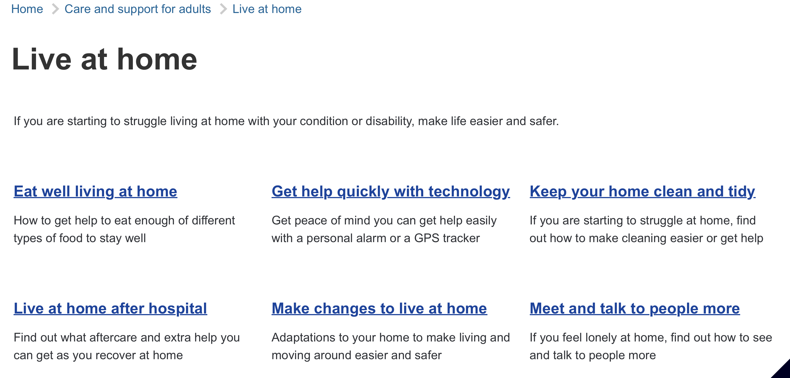
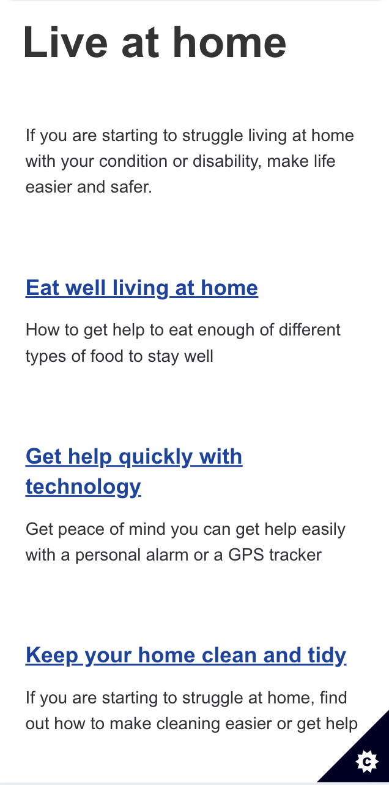

Transforming how a government service is provided online
Summary: how I re-designed a service's digital experience
I designed a new structure for Dorset's adult social care services to replace a sprawling 250 page site section. I identified user needs in interviews and where content to meet these was missing or excessive in an audit. I designed new content by pair-writing with subject experts, winning support for the transformation.
How I found out about service users' needs
Dorset Council wanted to better help people and families needing care online. To uncover the user needs of visitors, I carried out primary research.
I requested to listen to people calling the service to find out about how they think about their needs and what we offer. I decided this because Dorset Council had no user researchers and my desktop research only told me about people already accessing services.
I found out from listening to new and prospective service users that many avoided contacting us until their care needs were great. I learnt that even when people tried to get our advice on our existing site, they found it difficult to understand what could help.
I saw an opportunity to make it easier for people to access activities, advice, and equipment.
How I found out what content was useful and was missing
To recommend how we might reorganise the content, I carried out a content audit and mapped this published information to the needs I had uncovered.
I firstly looked at the needs prospective and potential service users reported and identified patterns. These formed stages in a journey to becoming a care service user, including 'denying needing help,' a trigger, and a resulting 'new life situation'.
Next, I placed the sections and pages of content at the stages in a journey into the service at the points when they might help. I soon saw that at some stages, content was overwhelming; at others, there were content gaps.
How I designed content to reflect people's needs
I made the case for change to the heads of the care service by presenting my findings on where we were over- or under-providing information, alongside analytics reinforcing my argument.
I set out a plan for re-designing, removing, or adding to content in new navigation sections corresponding to the journey to becoming a service user. I won their support for my recommended new site structure, and they requested for the relevant subject experts to work with me to develop the content.
So I proceeded to pair-write to design content without source information wherever possible and produced the new site before my 1-year contract was completed.
View a new section in the site structure I designed.
Visit the old site for comparison.

